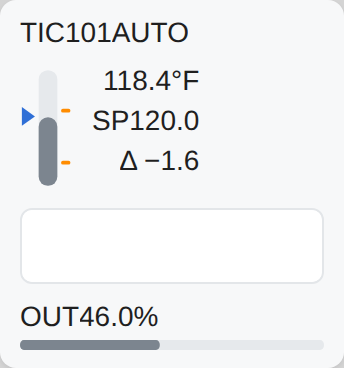

<figure class="card" id="Templates_Loops_Loop_B3_Sparkline"><div class="view" style="width:240px;height:257px"><div class="stage" style="width:172px;height:184px;transform:scale(1.3953)"><div class="hit" style="position:absolute;inset:0;pointer-events:none" title="click: open dynamic window"></div></div></div><figcaption><code>Templates/Loops/Loop_B3_Sparkline</code><br><b class="ok">T_PID</b> &middot; dock <code>dw_Loop</code><br>click symbol: open dock<br><i>render of the real view</i></figcaption></figure>